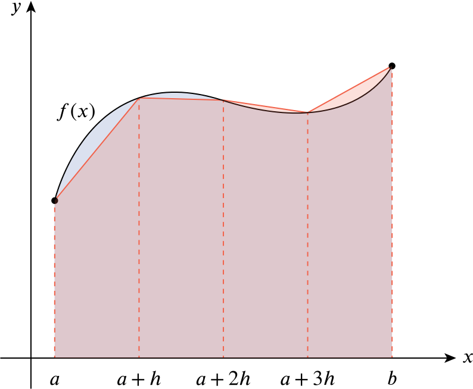

into a subset of the positive real numbers. Derive the trapezium rule for the approximate evaluation of the area under the curve y=f(x) between x=a and x=b, using (n−1) points of subdivision at a distance h=(b−a)/n apart.
Consider the following diagram.

In this diagram, we start with the graph of y=f(x) between x=a and x=b. This is shown in black. Our goal is to approximate the area under this curve; this is the region in blue (and purple, where it overlaps with the red region).
We then fix an integer n, define h=(b−a)/n, and divide the interval a≤x≤b into n equal parts (of length h) by marking the points at a+h, a+2h, and so on. We then draw line segments between (a,f(a)) and (a+h,f(a+h)); between (a+h,f(a+h)) and (a+2h,f(a+2h)); and so on. This is the (piecewise linear) curve in dark red.
The trapezium rule says that the area under the red curve (the region in light red; this is a sequence of trapezia) is approximately the same as the area under the original graph, with the approximation becoming more exact as n increases. We will write this symbolically:
area of the first trapezium+area of the second trapezium+⋯+area of the last trapezium=f(a)+f(a+h)2h+f(a+h)+f(a+2h)2h+⋯+f(b−h)+f(b)2h=h2(f(a)+2f(a+h)+2f(a+2h)+⋯+2f(b−h)+f(b))≈∫baf(x)dx.
Hence obtain an approximation to the integral
I=∫53xlnxdx
using the points of subdivision given in the following table:
x
3.0
3.5
4.0
4.5
5.0
xlnx
3.296
4.385
5.545
6.768
8.047
In the above, a=3, b=5, f(x)=xlnx, and h=0.5. Hence,